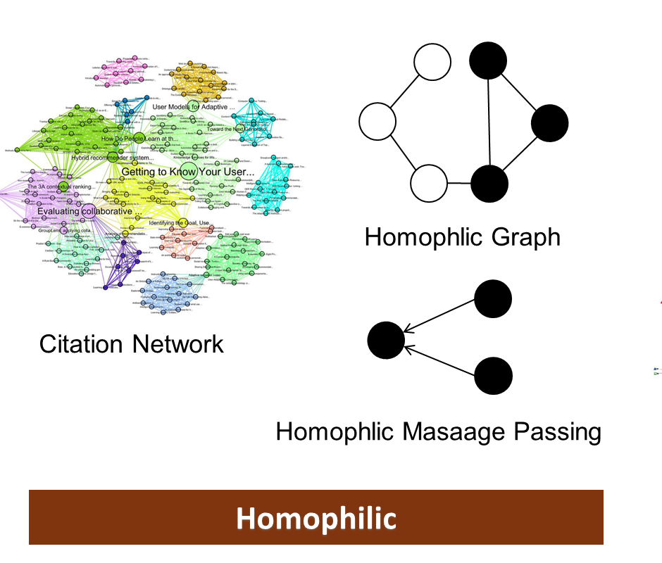
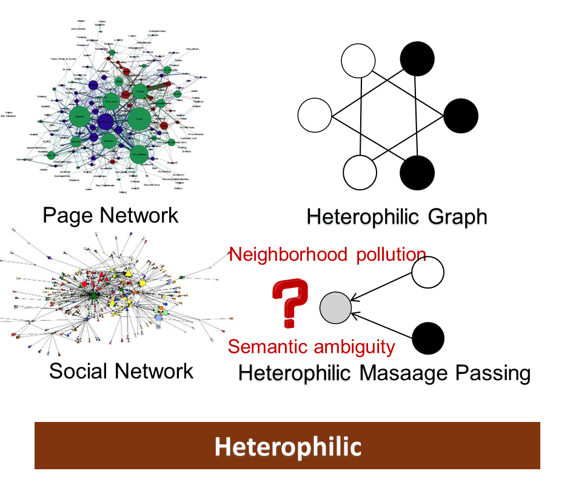
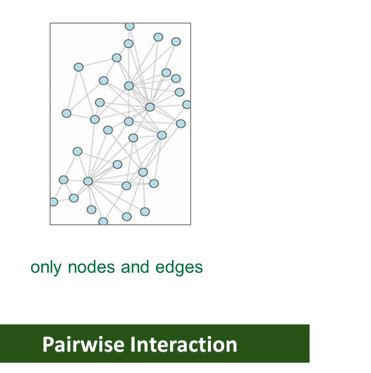
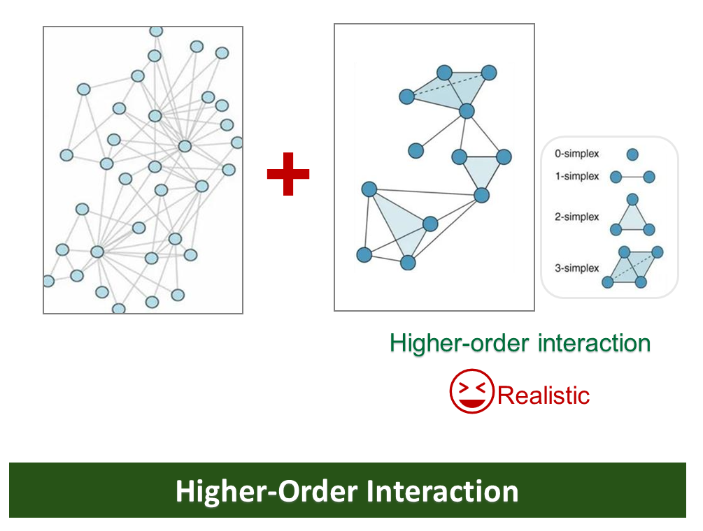
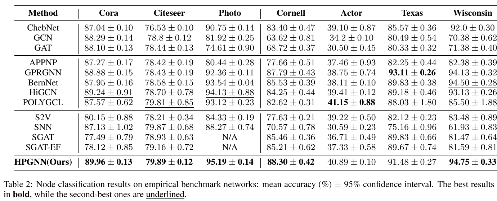
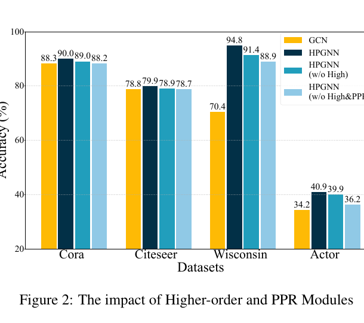
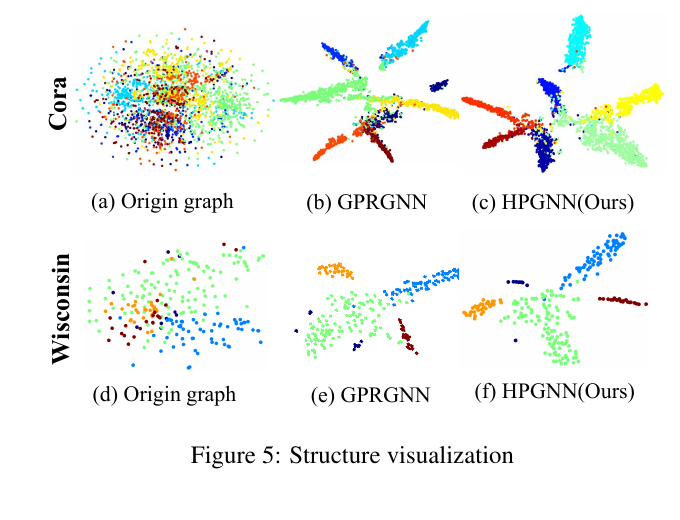
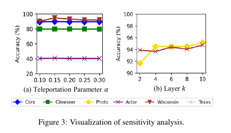
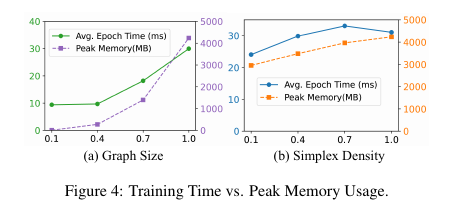

Higher-order Network
将边、三角形与团提升为不同阶单纯形。
HIGHER-ORDER GRAPH LEARNING · HETEROPHILY
融合个性化 PageRank 与高阶拓扑结构，缓解图神经网络中的异配性
Leveraging Personalized PageRank and Higher-Order Topological Structures for Heterophily Mitigation in Graph Neural Networks · IJCAI 2025
01 · MOTIVATION
异配边会把冲突语义带入邻域，而只建模节点对又会遗漏群组交互。下面两组图分别说明传播噪声与结构表达不足。




HPGNN：以单纯复形补足群组结构，再用 Personalized PageRank 保留个性化信号并抑制异配噪声。
02 · METHOD
从左到右，模型依次完成高阶结构构建、跨阶长程传播和多尺度信息融合。

将边、三角形与团提升为不同阶单纯形。
在各阶结构上捕获个性化长程依赖。
自适应融合不同阶与不同传播深度。
03 · EXPERIMENTS
主结果、消融、表示可视化、敏感性与可扩展性共同验证方法效果。





04 · CITATION
@inproceedings{wang2025leveraging,
title = {Leveraging Personalized PageRank and Higher-Order
Topological Structures for Heterophily Mitigation
in Graph Neural Networks},
author = {Wang, Yumeng and Wo, Zengyi and Wang, Wenjun and
Fu, Xingcheng and Shao, Minglai},
booktitle = {Proceedings of the Thirty-Fourth International Joint
Conference on Artificial Intelligence},
pages = {6506--6514},
year = {2025}
}